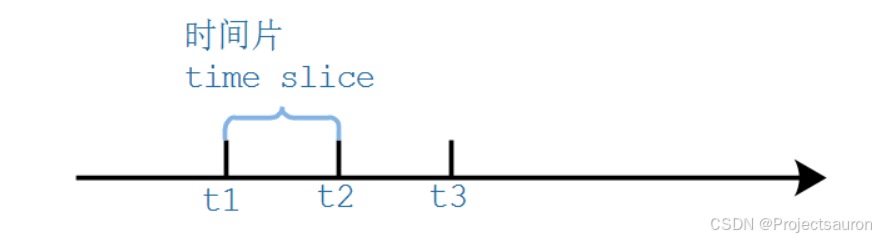
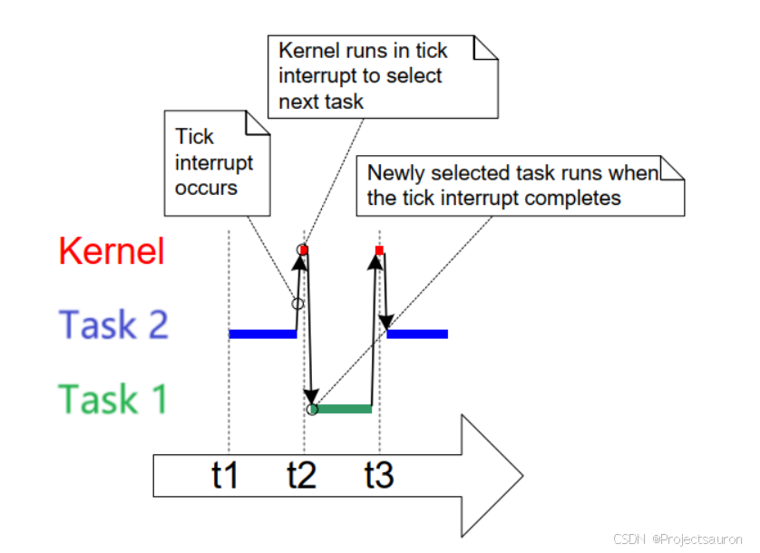
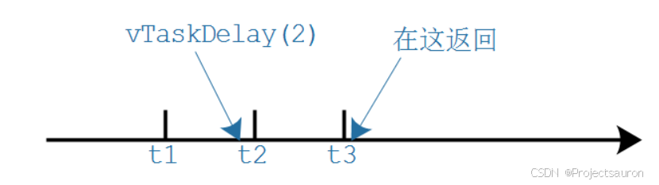
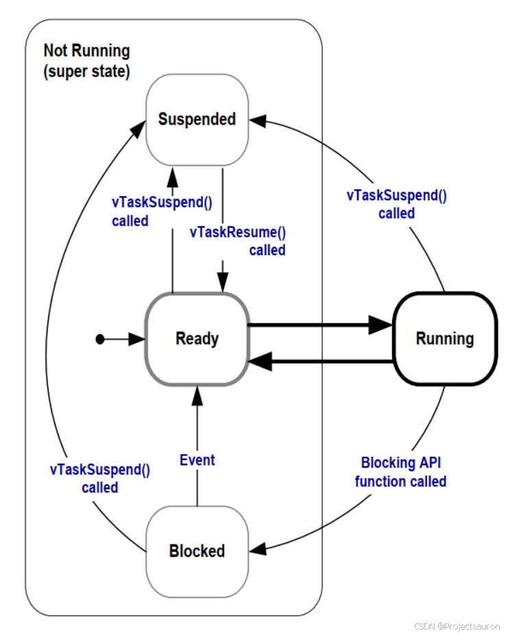
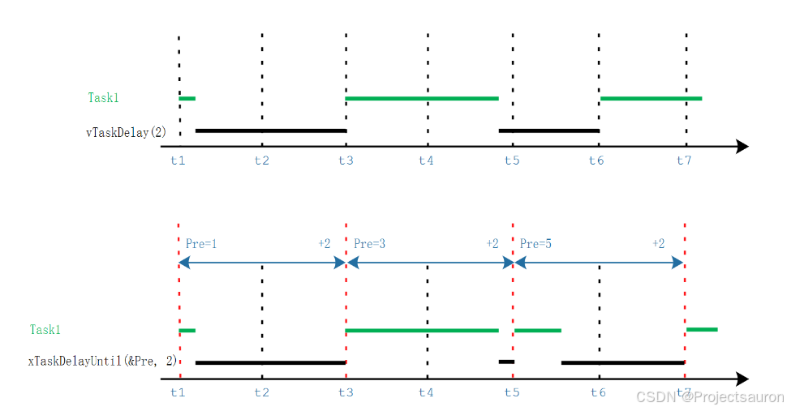
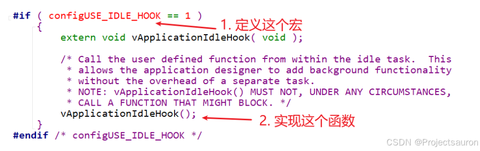

FreeRTOS 快速入门（三）之任务管理
@toc
一、任务创建与删除
1、什么是任务
在 FreeRTOS 中，任务就是一个函数，原型如下：
1 | |
要注意的是，函数内部，尽量使用局部变量。因为每个任务都有自己的栈，每个任务运行这个函数时，任务 A 的局部变量放在任务 A 的栈里、任务 B 的局部变量放在任务 B 的栈里。不同任务的局部变量，有自己的副本。函数使用全局变量、静态变量的话，只有一个副本：多个任务使用的是同一个副本。
如下例：
1 | |
2、创建任务
创建任务时使用的函数如下：
1 | |
上述两个任务创建函数有如下几点不同，之后如无特殊需要将一律使用动态分配内存的方式创建任务或其他实例
xTaskCreateStatic创建任务时需要用户指定任务栈空间数组和任务控制块的存储空间，而xTaskCreate创建任务其存储空间被动态分配，无需用户指定xTaskCreateStatic创建任务函数的返回值为成功创建的任务句柄，而xTaskCreate成功创建任务的句柄需要以参数形式提前定义并指定，同时其函数返回值仅表示任务创建成功/失败
参数说明：
| 参数 | 描述 |
|---|---|
pvTaskCode |
函数指针，可以简单地认为任务就是一个 C 函数。 它稍微特殊一点：永远不退出，或者退出时要调用”vTaskDelete(NULL)” |
pcName |
任务的名字，FreeRTOS 内部不使用它，仅仅起调试作用。 长度为：configMAX_TASK_NAME_LEN |
usStackDepth |
每个任务都有自己的栈，这里指定栈大小。 单位是 word，比如传入 100，表示栈大小为 100 word，也就是 400 字节。 最大值为 uint16_t 的最大值。 怎么确定栈的大小，并不容易，很多时候是估计。 精确的办法是看反汇编码。 |
pvParameters |
调用 pvTaskCode 函数指针时用到：pvTaskCode(pvParameters) |
uxPriority |
优先级范围：0~(configMAX_PRIORITIES – 1) 数值越小优先级越低， 如果传入过大的值，xTaskCreate 会把它调整为(configMAX_PRIORITIES – 1) |
pxCreatedTask |
用来保存 xTaskCreate 的输出结果：task handle。 以后如果想操作这个任务，比如修改它的优先级，就需要这个 handle。 如果不想使用该 handle，可以传入 NULL。 |
返回值 |
成功：pdPASS； 失败：errCOULD_NOT_ALLOCATE_REQUIRED_MEMORY(失败原因只有内存不足) 注意：文档里都说失败时返回值是 pdFAIL，这不对。 pdFAIL 是 0，errCOULD_NOT_ALLOCATE_REQUIRED_MEMORY 是-1。 |
3、任务的删除
删除任务时使用的函数如下：
1 | |
参数说明：
| 参数 | 描述 |
|---|---|
pvTaskCode |
任务句柄，使用 xTaskCreate 创建任务时可以得到一个句柄。 也可传入 NULL，这表示删除自己。 |
例：
- 自杀：vTaskDelete(NULL)
- 被杀：别的任务执行 vTaskDelete(pvTaskCode) ，pvTaskCode 是自己的句柄
- 杀人：执行 vTaskDelete(pvTaskCode) ，pvTaskCode 是别的任务的句柄
二、任务优先级和 Tick
1、任务优先级
高优先级的任务先运行。优先级的取值范围是：0~(configMAX_PRIORITIES – 1)，==数值越大优先级越高==。
FreeRTOS 的调度器可以使用 2 种方法来快速找出优先级最高的、可以运行的任务。使用不同的方法时，configMAX_PRIORITIES 的取值有所不同。
- 通用方法
- 使用 C 函数实现，对所有的架构都是同样的代码。对
configMAX_PRIORITIES的取值没有限制。但是configMAX_PRIORITIES的取值还是尽量小，因为取值越大越浪费内存，也浪费时间。 configUSE_PORT_OPTIMISED_TASK_SELECTION被定义为 0、或者未定义时，使用此方法。
- 使用 C 函数实现，对所有的架构都是同样的代码。对
- 架构相关的优化的方法
- 架构相关的汇编指令，可以从一个 32 位的数里快速地找出为 1 的最高位。使用这些指令，可以快速找出优先级最高的、可以运行的任务。
- 使用这种方法时，
configMAX_PRIORITIES的取值不能超过 32。 configUSE_PORT_OPTIMISED_TASK_SELECTION被定义为 1 时，使用此方法。
总而言之：
- FreeRTOS 会确保最高优先级的、可运行的任务，马上就能执行
- 对于相同优先级的、可运行的任务，轮流执行
2、Tick
FreeRTOS 中也有心跳，它使用定时器产生固定间隔的中断。这叫 Tick、滴答，比如每 10ms 发生一次时钟中断。
如下图：假设 t1、t2、t3 发生时钟中断，两次中断之间的时间被称为时间片(time slice、tick period)。时间片的长度由 configTICK_RATE_HZ 决定，假设 configTICK_RATE_HZ 为 100，那么时间片长度就是 10ms。

相同优先级的任务怎么切换呢？请看下图：
任务 2 从 t1 执行到 t2，在 t2 发生 tick 中断，进入 tick 中断处理函数：选择下一个要运行的任务。执行完中断处理函数后，切换到新的任务：任务 1。任务 1 从 t2 执行到 t3，从图中可以看出，任务运行的时间并不是严格从 t1,t2,t3 哪里开始。

有了 Tick 的概念后，我们就可以使用 Tick 来衡量时间了，比如：
1 | |
注意，基于 Tick 实现的延时并不精确，比如 vTaskDelay(2) 的本意是延迟 2 个 Tick 周期，有可能经过 1 个 Tick 多一点就返回了。如下图：

使用 vTaskDelay 函数时，建议以 ms 为单位，使用 pdMS_TO_TICKS 把时间转换为 Tick。
这样的代码就与configTICK_RATE_HZ无关，即使配置项configTICK_RATE_HZ改变了，我们也不用去修改代码。
3、 修改优先级
我们使用 uxTaskPriorityGet 来获得任务的优先级：
1 | |
使用参数 xTask 来指定任务，设置为 NULL 表示获取自己的优先级。
通过使用 vTaskPrioritySet 来设置任务的优先级：
1 | |
- 使用参数 xTask 来指定任务，设置为 NULL 表示设置自己的优先级；
- 参数 uxNewPriority 表示新的优先级，取值范围是 0~(configMAX_PRIORITIES – 1)。
三、任务状态
1、阻塞状态(Blocked)
在实际产品中，我们不会让一个任务一直运行，而是使用”事件驱动”的方法让它运行：
- 任务要等待某个事件，事件发生后它才能运行
- 在等待事件过程中，它不消耗 CPU 资源
- 在等待事件的过程中，这个任务就处于阻塞状态（Blocked）
在阻塞状态的任务，它可以等待两种类型的事件：
- 时间相关的事件
- 可以等待一段时间：我等 2 分钟
- 也可以一直等待，直到某个绝对时间：我等到下午 3 点
- 同步事件：这事件由别的任务，或者是中断程序产生
- 例子 1：任务 A 等待任务 B 给它发送数据
- 例子 2：任务 A 等待用户按下按键
- 同步事件的来源有很多(这些概念在后面会细讲)：
- 队列(queue)
- 二进制信号量(binary semaphores)
- 计数信号量(counting semaphores)
- 互斥量(mutexes)
- 递归互斥量、递归锁(recursive mutexes)
- 事件组(event groups)
- 任务通知(task notifications)
在等待一个同步事件时，可以加上超时时间。比如等待队里数据，超时时间设为 10ms：
- 10ms 之内有数据到来：成功返回
- 10ms 到了，还是没有数据：超时返回
2、暂停状态(Suspended)
FreeRTOS 中的任务也可以进入暂停状态，唯一的方法是通过 vTaskSuspend 函数。函数原型如下：
1 | |
参数 xTaskToSuspend 表示要暂停的任务，如果为 NULL，表示暂停自己。
要退出暂停状态，只能由别人来操作：
- 别的任务调用：vTaskResume
- 中断程序调用：xTaskResumeFromISR
实际开发中，暂停状态用得不多。
3、就绪状态(Ready)
这个任务完全准备好了，随时可以运行：只是还轮不到它。这时，它就处于就绪态（Ready）。
4、状态转换

- 创建任务–>就绪态：任务创建完成后进入就绪态，表明任务已准备就绪，随时可以运行，只等待调度器进行调度。
- 就绪态→运行态：发生任务切换时，就绪列表中最高优先级的任务被执行，从而进入运态。
- 运行态–>就绪态：有更高优先级任务创建或者恢复后，在滴答中断会发生任务调度，此刻最高优先级任务变为运行态，那么原先运行的任务由运行态变为就绪态，依然在就绪列表中，等待最高优先级的任务运行完毕继续运行原来的任务（此处可以看做是 CPU 使用权被更高优先级的任务抢占了）。
- 运行态–>阻塞态：正在运行的任务发生阻塞（挂起、延时、读信号量等待）时，该任务会从就绪列表中删除，任务状态由运行态变成阻塞态，然后发生任务切换，运行就绪列表中当前最高优先级任务。
- 阻塞态–>就绪态：阻塞的任务被恢复后（任务恢复、延时时间超时、读信号量超时或读到信号量等），此时被恢复的任务会被加入就绪列表，从而由阻塞态变成就绪态；如果此时被恢复任务的优先级高于正在运行任务的优先级，则会发生任务切换，将该任务将再次转换任务状态，由就绪态变成运行态。
- 就绪态–>挂起态：任务可以通过调用
vTaskSuspend()函数可以将处于就绪态的任务挂起，被挂起的任务得不到CPU 的使用权，也不会参与调度，除非它从挂起态中解除。 - 阻塞态–>挂起态：同样，任务可以通过调用
vTaskSuspend()函数将处于阻塞态的任务挂起。 - 运行态–>挂起态：同样，任务可以通过调用
vTaskSuspend()函数将处于运行态的任务挂起。总之，不管当前任务处于何种状态，调用vTaskSuspend()后都会将任务挂起。 - 挂起态–>就绪态：把 一 个 挂 起 状态 的 任 务 恢复的 唯 一 途 径 就 是调 用
vTaskResume()或vTaskResumeFromISR()函数，如果此时被恢复任务的优先级高于正在运行任务的优先级，则会发生任务切换，将该任务将再次转换任务状态，由就绪态变成运行态。
1 | |
四、Delay 函数
这里有两个 Delay 函数：
vTaskDelay：至少等待指定个数的 Tick Interrupt 才能变为就绪状态vTaskDelayUntil：等待到指定的绝对时刻，才能变为就绪态。
这 2 个函数原型如下：
1 | |
下面画图说明：
- 使用
vTaskDelay(n)时，进入、退出vTaskDelay的时间间隔至少是 n 个 Tick 中断 - 使用
xTaskDelayUntil(&Pre, n)时，前后两次退出xTaskDelayUntil的时间至少是 n 个 Tick 中断- 退出
xTaskDelayUntil时任务就进入的就绪状态，一般都能得到执行机会 - 所以可以使用
xTaskDelayUntil来让任务周期性地运行
- 退出

五、空闲任务及其钩子函数
1、介绍
一个良好的程序，它的任务都是事件驱动的：平时大部分时间处于阻塞状态。有可能我们自己创建的所有任务都无法执行，但是调度器必须能找到一个可以运行的任务：所以，我们要提供空闲任务。在使用 vTaskStartScheduler() 函数来创建、启动调度器时，这个函数内部会创建空闲任务：
- 空闲任务优先级为 0：它不能阻碍用户任务运行
- 空闲任务要么处于就绪态，要么处于运行态，永远不会阻塞
空闲任务的优先级为 0，这以为着一旦某个用户的任务变为就绪态，那么空闲任务马上被切换出去，让这个用户任务运行。在这种情况下，我们说用户任务”抢占”(pre-empt)了空闲任务，这是由调度器实现的。
要注意的是：如果使用 vTaskDelete() 来删除任务，那么你就要==确保空闲任务有机会执行==，否则就无法释放被删除任务的内存。
我们可以添加一个空闲任务的钩子函数(Idle Task Hook Functions)，空闲任务的循环没执行一次，就会调用一次钩子函数。钩子函数的作用有这些：
- 执行一些低优先级的、后台的、需要连续执行的函数
- 测量系统的空闲时间：空闲任务能被执行就意味着所有的高优先级任务都停止了，所以测量空闲任务占据的时间，就可以算出处理器占用率。
- 让系统进入省电模式：空闲任务能被执行就意味着没有重要的事情要做，当然可以进入省电模式了。
空闲任务的钩子函数的限制：
- 不能导致空闲任务进入阻塞状态、暂停状态
- 如果你会使用
vTaskDelete()来删除任务，那么钩子函数要非常高效地执行。如果空闲任务移植卡在钩子函数里的话，它就无法释放内存。
2、使用钩子函数的前提
在 task.c 文件中：
- 把这个宏定义为 1：
configUSE_IDLE_HOOK - 实现
vApplicationIdleHook函数

六、调度算法
所谓调度算法，就是怎么确定哪个就绪态的任务可以切换为运行状态。
通过配置文件 FreeRTOSConfig.h 的两个配置项来配置调度算法：configUSE_PREEMPTION、configUSE_TIME_SLICING。
还有第三个配置项：configUSE_TICKLESS_IDLE，它是一个高级选项，用于关闭 Tick 中断来实现省电。
调度算法的行为主要体现在两方面：高优先级的任务先运行、同优先级的就绪态任务如何被选中。调度算法要确保同优先级的就绪态任务，能”轮流”运行，策略是”轮转调度”(Round Robin Scheduling)。轮转调度并不保证任务的运行时间是公平分配的，我们还可以细化时间的分配方法。
从 3 个角度统一理解多种调度算法：
- 可否抢占？高优先级的任务能否优先执行(配置项:
configUSE_PREEMPTION)- 可以：被称作”可抢占调度”，高优先级的就绪任务马上执行，下面再细化。
- 不可以：不能抢就只能协商了，被称作”合作调度模式”
- 当前任务执行时，更高优先级的任务就绪了也不能马上运行，只能等待当前任务主动让出 CPU 资源。
- 其他同优先级的任务也只能等待：更高优先级的任务都不能抢占，平级的更应该老实点
- 可抢占的前提下，同优先级的任务是否轮流执行(配置项：
configUSE_TIME_SLICING)- 轮流执行：被称为”时间片轮转”，同优先级的任务轮流执行，你执行一个时间片、我再执行一个时间片
- 不轮流执行：当前任务会一直执行，直到主动放弃、或者被高优先级任务抢占
- 在”可抢占”+”时间片轮转”的前提下，进一步细化：空闲任务是否让步于用户任务(配置项：
configIDLE_SHOULD_YIELD)- 空闲任务低人一等，每执行一次循环，就看看是否主动让位给用户任务
- 空闲任务跟用户任务一样，大家轮流执行，没有谁更特殊
列表如下：
| 配置项 | A | B | C | D | E |
|---|---|---|---|---|---|
configUSE_PREEMPTION |
1 | 1 | 1 | 1 | 0 |
configUSE_TIME_SLICING |
1 | 1 | 0 | 0 | X |
configIDLE_SHOULD_YIELD |
1 | 0 | 1 | 0 | X |
说明 |
常用 | 很少用 | 很少用 | 很少用 | 几乎不用 |
注：
- A：可抢占+时间片轮转+空闲任务让步
- B：可抢占+时间片轮转+空闲任务不让步
- C：可抢占+非时间片轮转+空闲任务让步
- D：可抢占+非时间片轮转+空闲任务不让步
- E：合作调度
1 | |
除了任务被时间片轮询切换或者高优先级抢占发生切换两种常见的调度方式外，还有其他的调度方式，比如任务自愿让出处理器给其他任务使用等函数，这些函数将在后续 “中断管理” 章节中被详细介绍，这里简单了解即可，如下所述
1 | |
七、工具函数
任务相关的实用工具函数较多，官方网站上一共列出了 23 个 API 函数，这里仅简单介绍一些可能常用的 API 函数：
1、获取任务信息
1 | |
2、获取内核信息
1 | |
3、其他函数
1 | |